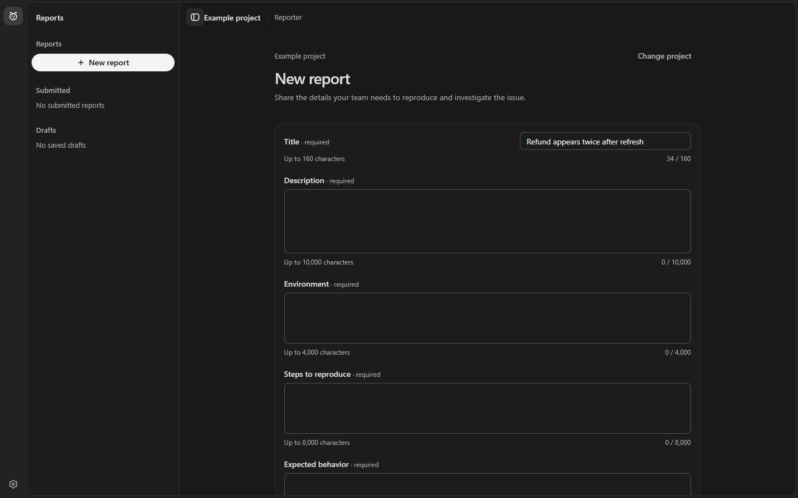
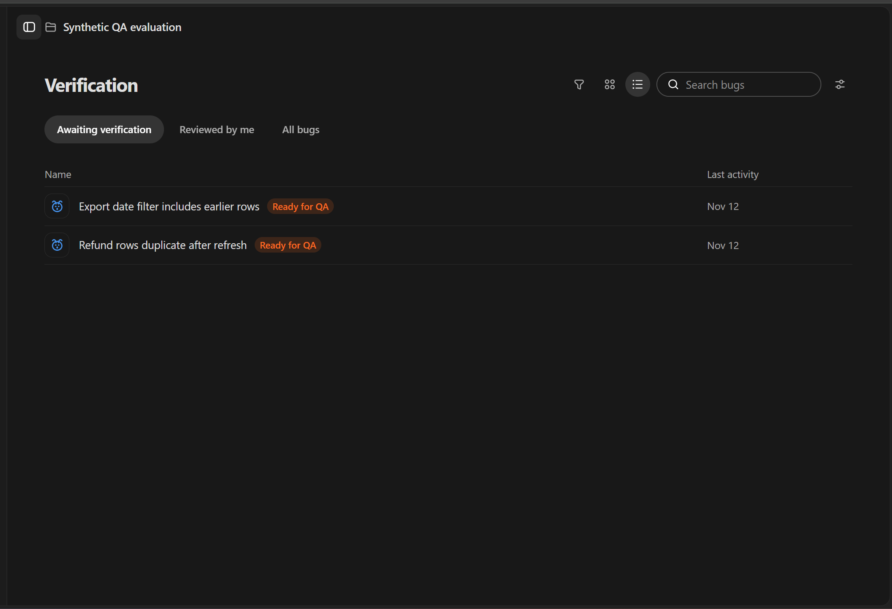

From the first report
to the final check.
TraceDesk brings reporting, investigation and verification into one clear workflow, so teams can follow an issue through to a verified resolution.
The workflow
Every bug has a journey.
A clear handoff gives everyone the context they need. A Reporter describes the issue, a Developer investigates, and a QA reviewer checks the proposed fix.
Reporter
Give the issue a clear starting point.
Capture what happened, what you expected, and the steps needed to reproduce it. Save a draft or submit a report when it is ready.

Developer
Move from evidence to a proposed fix.
Investigate assigned bugs, keep private notes and share a resolution with QA. The report stays connected to the work it started.
QA reviewer
Know what has been verified.
Review the report and proposed fix, record checks and either close the bug or send it back with a reason.

AI assistance
A little help, with people in control.
AI can help shape a report or suggest verification checks. Suggestions are advisory: review them and choose what to use.
Explore TraceDesk
Go deeper.
Learn how to use the app and explore how the team designed and built it.